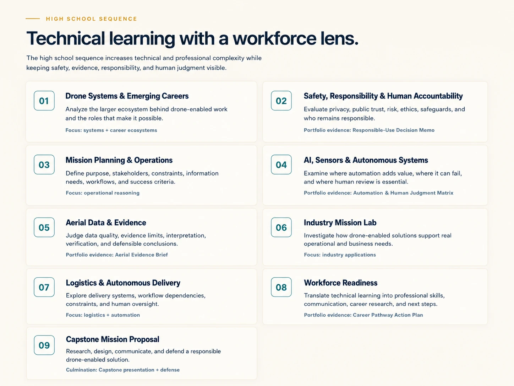
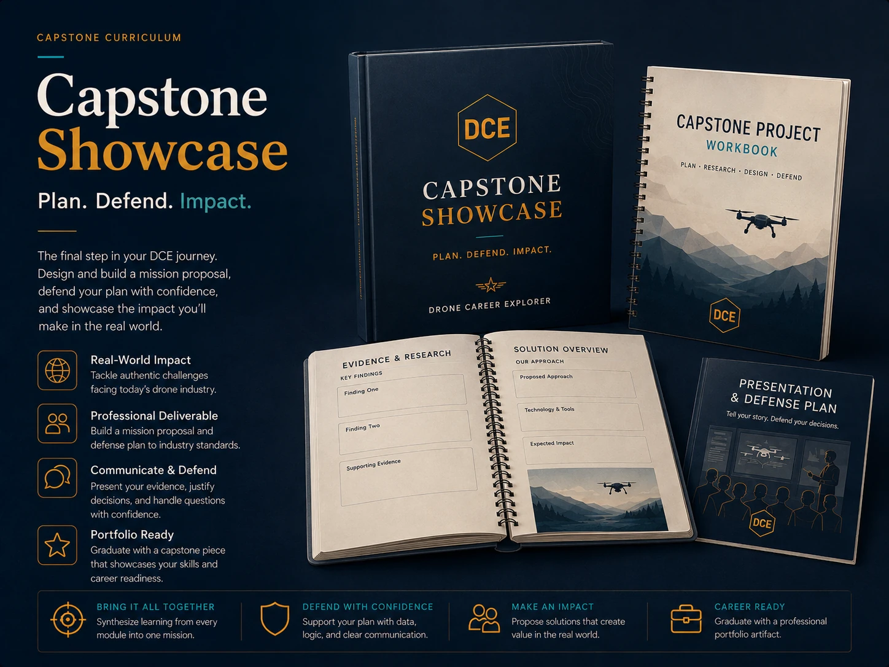

Connect portfolio evidence to career clusters, industry trends, and postsecondary UAS pathways.
High School at a Glance
High school learners analyze evidence, mission constraints, automation, industry workflows, logistics, and the human accountability behind drone-enabled solutions.
Connect high-school learning to FAA Remote Pilot knowledge preparation.
Nine units move from systems analysis to capstone defense.
The high school sequence increases technical and professional complexity while keeping safety, evidence, responsibility, and human judgment visible.

Capstone showcase
The high school capstone brings research, mission planning, evidence, communication, and defense into a professional-style final portfolio experience.

Applied learning in a real workforce context.
Students connect drone technology to industries, teams, communication, evidence, and real workforce expectations.
Simulation & flight connections
Research, systems analysis, data interpretation, mission planning, and industry cases form the academic core. Simulation-based and supervised flight experiences may be incorporated through school or partner programs to deepen applied learning where appropriate.
This is career-connected technical learning—not FAA pilot certification.